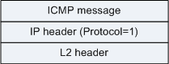
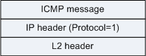
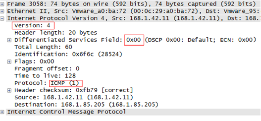
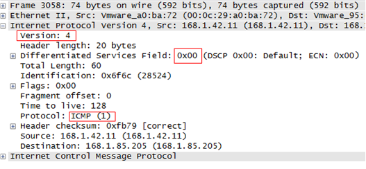

报文格式
有很多情况都会发送ICMP消息，例如，报文无法发送到目的地址，再如，网关设备没有足够的缓存来存储转发报文。
ICMP消息封装在IP报文中，格式如下：
图1 ICMP消息封装格式


ICMP消息头部格式如下：
图2 ICMP消息头部格式

其中，最后一个字段的长度和内容，取决于消息的类型和代码。对应的列表如下：
| 类型Type | 代码Code | 描述 |
|---|---|---|
| 0 | 0 | 回显应答（ping应答） |
| 3 | 0 | 网络不可达 |
| 3 | 1 | 主机不可达 |
| 3 | 2 | 协议不可达 |
| 3 | 3 | 端口不可达 |
| 3 | 4 | 需要进行分片但设置不分片比特 |
| 3 | 5 | 源站选路失败 |
| 3 | 6 | 目的网络不认识 |
| 3 | 7 | 目的主机不认识 |
| 3 | 8 | 源主机被隔离（作废不用） |
| 3 | 9 | 目的网络被强制禁止 |
| 3 | 10 | 目的主机被强制禁止 |
| 3 | 11 | 由于TOS，网络不可达 |
| 3 | 12 | 由于TOS，主机不可达 |
| 3 | 13 | 由于过滤，通信被强制禁止 |
| 3 | 14 | 主机越权 |
| 3 | 15 | 优先权中止生效 |
| 4 | 0 | 源端被关闭 |
| 5 | 0 | 对网络重定向 |
| 5 | 1 | 对主机重定向 |
| 5 | 2 | 对服务类型和网络重定向 |
| 5 | 3 | 对服务类型和主机重定向 |
| 8 | 0 | 请求回显（ping请求） |
| 9 | 0 | 路由器通告 |
| 10 | 0 | 路由器请求告 |
| 11 | 0 | 传输期间生存时间为0 |
| 11 | 1 | 在数据报组装期间生存时间为0 |
| 12 | 0 | 坏的IP首部 |
| 12 | 1 | 缺少必须的选项 |
| 13 | 0 | 时间戳请求（作废不用） |
| 14 | 0 | 时间戳应答（作废不用） |
| 15 | 0 | 信息请求（作废不用） |
| 16 | 0 | 信息应答（作废不用） |
| 17 | 0 | 地址掩码请求 |
| 18 | 0 | 地址掩码应答 |
报文示例
图3 封装了ICMP消息的IP头部格式示例


参考标准
| 标准 | 描述 |
|---|---|
| RFC 792 | Internet Control Message Protocol |